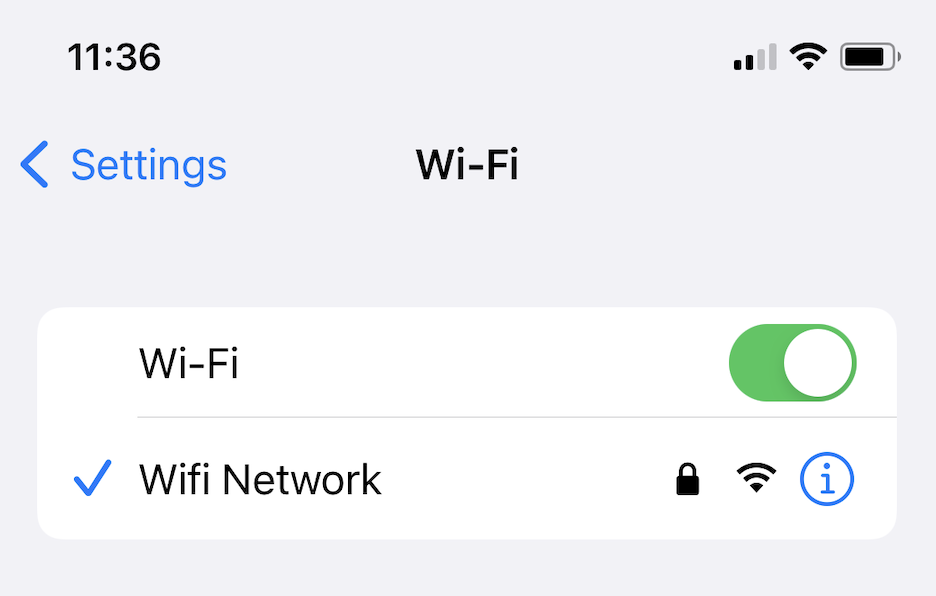
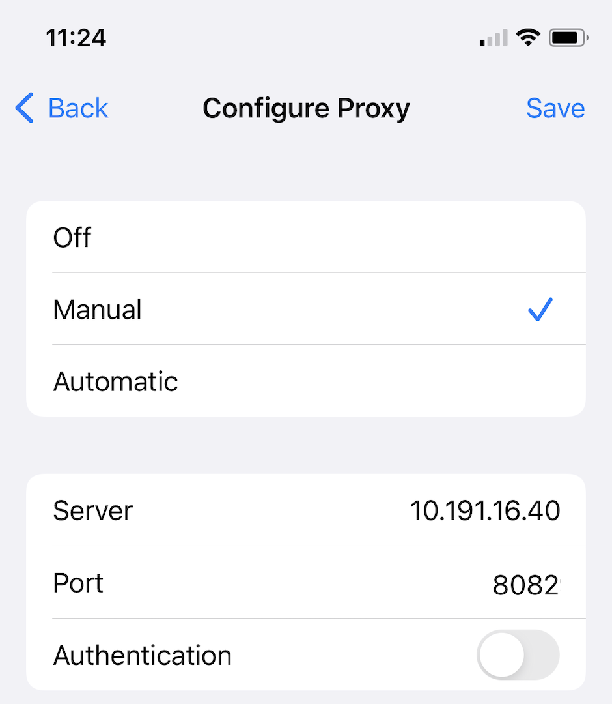
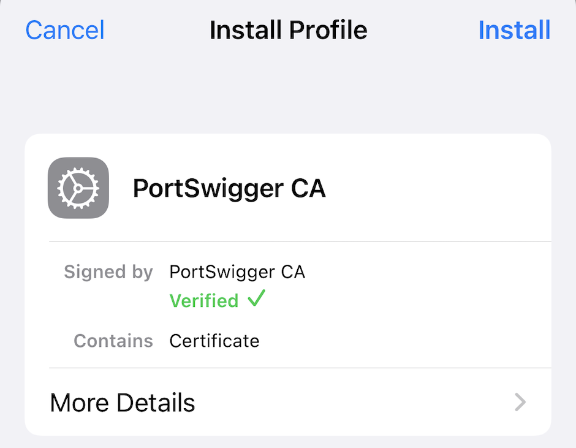
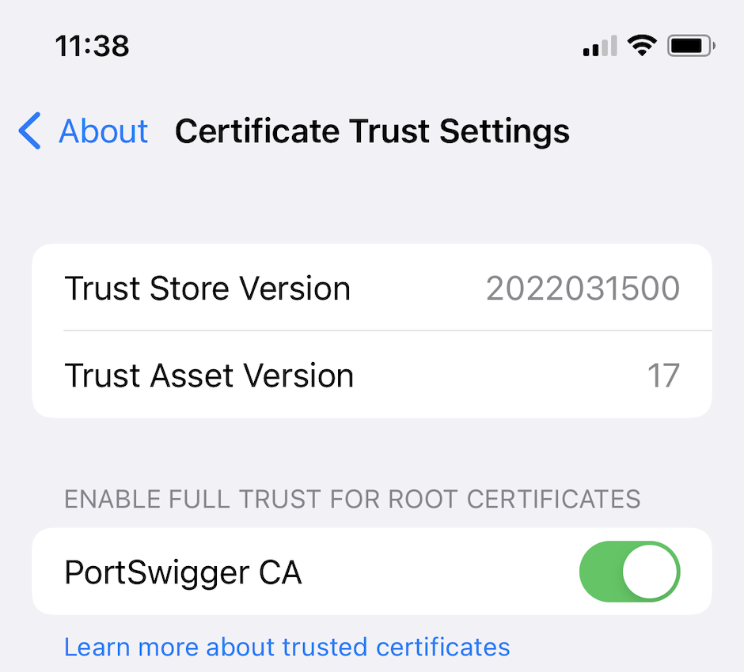

Burp Suite Professionalと連携するようiOS端末を設定する
iOS端末を使用して、Webアプリケーションやモバイルアプリのテストができます。そのためには、次のことを行う必要があります:
-
Burp Proxyリスナーが、すべてのネットワークインタフェースで接続を受け入れるように設定します。
-
端末とコンピューターの両方を同じワイヤレスネットワークに接続します。
-
HTTPSで通信するには、iOS端末にCA証明書をインストールする必要があります。
Burp Suite ProfessionalのProxy設定を行うには:
-
Burp Suite Professionalを開き、Proxy > オプションに移動します。
-
Proxyリスナーで、追加をクリックします。
-
バインドタブで、バインドするポートに
8082 (あるいは使用していない他のポート)を設定します。
-
すべてのインタフェースを選択し、OKをクリックします。
-
プロンプトが表示されたら、はいをクリックします。
iOS端末のプロキシ設定を行うには:
-
iOS端末で、設定 > Wi-Fiに移動します。
-
Wi-Fiボタンがオンになっていることを確認し、Wi-Fiネットワークに接続します。
-
Wi-Fiネットワークの横にある情報アイコン(i)を選択します。

-
プロキシを構成を手動に設定します。
-
サーバに、Burp Suite Professionalが動作しているコンピュータのIPアドレスを設定します。
-
ポートに、Burp Proxyリスナーに設定したポート番号(この例では
8082)を設定します。
-
保存をタッチします。
.

ステップ3: iOS端末にCA証明書をインストールする
HTTPSで通信するには、iOS端末にBurp Suite ProfessionalのCA証明書をインストールする必要があります。
iOS端末にCA証明書をインストールするには:
-
Burp Suite Professionalがコンピュータ上で起動しているか確認します。
-
iOSデバイスのブラウザで
http://burpsuiteにアクセスし、CA Certificateを選択します。
-
CA証明書がダウンロードされたら、設定メニューでダウンロード済みのプロファイルを選択します。
-
プロファイルのインストール画面で、インストールを選択します。

-
プロファイルのインストール画面で、インストールを選択します。
-
プロファイルがインストールされたら、完了を選択します。
-
設定 > 一般 > 情報 > 証明書信頼設定に移動します。
-
Portswigger CAのトグルボタンを有効にします。

ステップ4: 設定をテストする
設定をテストするには:
-
Burp Suite Professionalを開きます。
-
Proxy > インターセプトに移動し、インターセプト無効をクリックしてインターセプトを有効にします。
-
iOS端末のブラウザを開き、HTTPSのWebページにアクセスします。
セキュリティ警告が表示されずにページが読み込まれるはずです。Burp Suite Professional内に、対応するリクエストが表示されるはずです。